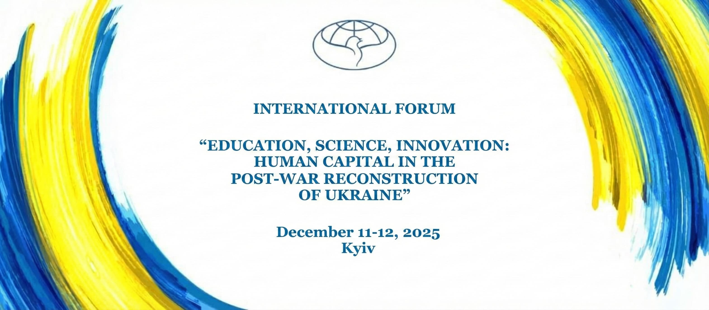

Language / Мова:



Panel Discussions / Sections
1. Strategic Directions and Factors in Human Capital Formation
- Educational and scientific priorities for Ukraine’s socio-economic recovery
- New forms of learning and research under digital transformation
- Artificial intelligence in science and education
Main organizer: National Academy of Educational Sciences of Ukraine.
2. Science as a Driver of Postwar Recovery and Innovation
- The role of fundamental research in creating new technologies and materials
- State support and international cooperation in fundamental science
- Challenges and opportunities for the development of fundamental sciences in the context of rebuilding the country
Main organizer: National Academy of Sciences of Ukraine.
3. Innovations in Ukraine’s Postwar Recovery
- Creating innovative university infrastructure: legal and organizational challenges.
- (the panel will also include an exhibition of innovative startup projects by Ukrainian educators and researchers)
Main organizer: Innovation Ecosystem “Sikorsky Challenge Ukraine”.
4. European Vector of Development for Ukrainian Science and Education
- Harmonization of Ukrainian science and education with European standards
- Adaptation of European practices in training specialists for the new economy
Main organizer: Taras Shevchenko National University of Kyiv.
5. Lifelong Learning: Economic, Social-Labor, and Institutional Challenges
- Higher education in the coordinates of the new digital economy.
- Higher and platform-based education for the “silver economy”.
- Professional and social adaptation in veteran development policy.
- Strategies for the development of higher education under “Industry 5.0” and “Labour 5.0”.
Main organizer: Vadym Hetman Kyiv National Economic University.
6. Training a New Generation of Teachers and Educators
- Competencies of the modern teacher and educator: innovativeness, critical thinking, digital literacy
- Education as a means of shaping national identity and restoring social unity
Main organizer: Dragomanov Ukrainian State University.
7. The Role of Youth in the Development of Science and Education
- Youth participation in reintegration processes
- The issue of youth returning to Ukraine
Main organizer: Youth Branch of the Ukrainian Peace Council.
8. Participation of International Organizations in the Reform of Education in Ukraine
Main organizer: Media Center of the General Directorate for Servicing Foreign Missions (GDIP).